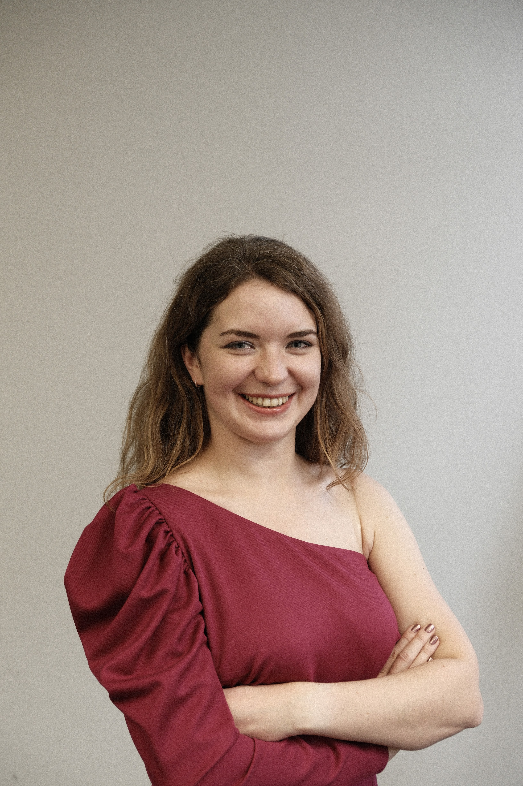

Introduction
Virtual Try-On (VTO) is an emerging consumer application that enables users to perceive products
on their individual bodies in a virtual or mixed reality space. This has been driven by advances in
3D modeling of humans and objects (such as furniture, shoes, garments etc.). These experiences enable users to visualize and “feel” products, especially in the
beauty, fashion, and accessories space, virtually, before making purchases. This gives buyers opportunities
to customize and personalize products.
Successful integration of realistic try-on experiences
on e-commerce websites can have significant environmental impact by reducing the need to return
products, improving satisfaction of purchased items, and improving accessibility. Beyond fashion and
beauty, adoption of try-on-like experiences, especially in an Augmented Reality (AR) setting, can be
seen in applications such as remote collaboration, gaming, education, and health-care.
Enabling such applications, however, is not without its unique challenges that necessitate solutions
inspired by ideas in computer vision, 3D modeling and reconstruction (single and multi-view), geometry
processing, and more recently, generative AI. Our workshop will focus on these key technical areas
of strong interest for the CVPR community.
This is an active and multi-disciplinary area of research, drawing interest from researchers in academia and industry alike. Furthermore, the user-centric nature
of this domain and inherent application to fashion requires researchers and technologists to understand
the nature of bias in their data (catalog data is skewed towards a narrow BMI-range and demographic),
trust and data-security issues (body image / data is often a necessary input) and the mental-health
impact of try-on products for their users.
Invited Speakers

Ira Kemelmacher-Shlizerman
University of Washington
University of Washington

Michael Black
MPI Perceiving Systems
MPI Perceiving Systems

Gordon Wetzstein
Stanford University
Stanford University

Christian Theobalt
MPI Informatics
MPI Informatics

Maria Korosteleva
Meshcapade
Meshcapade
Huamin Wang
Style3D
Style3D
Schedule
| Welcome and Introduction | 1:00 - 1:10 PM |
| Invited Talk 1 (Gordon Wetztein) | 1:10 - 1:40 PM |
| Invited Talk 2 (Michael Black) | 1:45 - 2:15 PM |
| Invited Talk 3 (Maria Korosteleva) | 2:20 - 2:50 PM |
| Break | 2:50 - 3:00 PM |
| Invited Talk 4 (Christian Theobalt) | 3:00 - 3:30 PM |
| Invited Talk 5 (Huamin Wang) | 3:30 - 4:00 PM |
| Invited Talk 6 (Ira Kemelmacher-Schlizerman) | 4:00 - 4:30 PM |
| Panel Discussion and Conclusion | 4:30 - 5:00 PM |
Organizers

Akshay Gadi Patil (POC)
Amazon Science

Vidya Narayanan
Amazon Science

Haoye Dong
Carnegie Mellon University

Gerard Pons-Moll
University of Tubingen

Ming C Lin